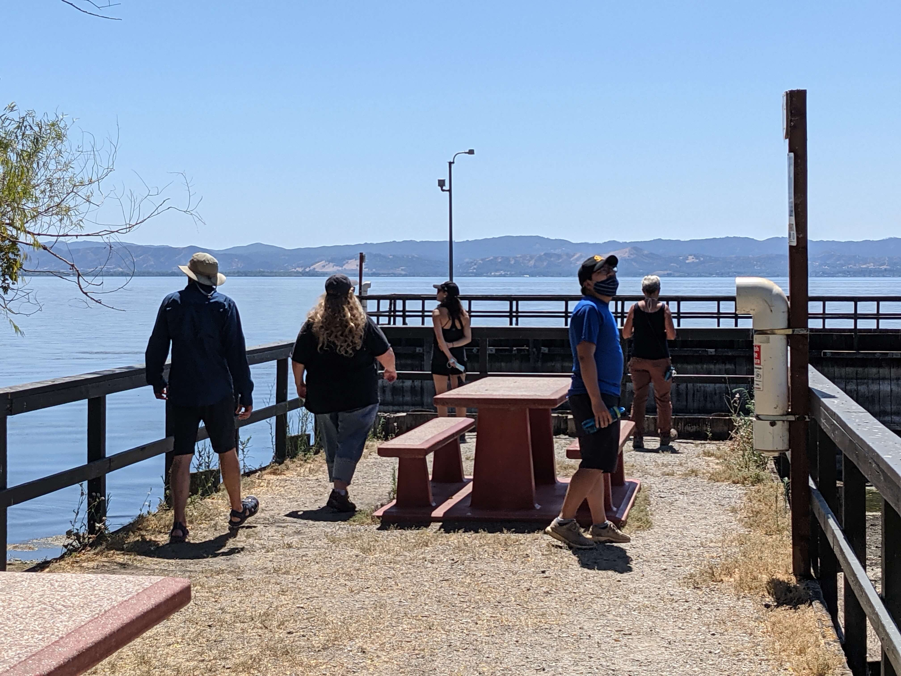
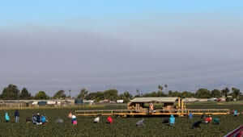

Visiting Clear Lake and meeting with Big Valley Rancheria
Cal-WATCH team visiting Clear Lake
From Friday July 23 to Saturday July 24, California Water: Assessment of Toxins for Community Health (Cal-WATCH) Project staff visited Clear Lake to meet with our community partner, Big Valley Band of Pomo Indians or Big Valley Rancheria (BVR), and to distribute surveys to residents and visitors at the lake. The day started with us touring the perimeter of Clear Lake and visiting hotspots where cyanobcateria were visible. The tour was led by Karola Kennedy, Water Resources Manager with Robinson Rancheria who helps collect samples around the lake. On this tour, we were able to observe Lyngbya, a strand of cyanobacteria that has a strong/persistent odor and can sometimes cause itching, burning, pain, and rashes when coming in contact with one's skin. Breathing in aerosols can also irritate the lungs. Lucky for our team, the Lyngbya at Clear Lake had receded a bit and odors were not as foul as the two weeks before our arrival.
After our tour and lunch, we met up with Sarah Ryan, Deputy Tribal Administrator/Environmental Director, at BVR who had arranged for us to speak with a reporter from Lake County News. Several members of the team also participated in a radio interview that evening. That night, we camped at Clear Lake State Park and in the morning, split up to distribute paper surveys at several locations including 1) a local farmers market in Lakeport, 2) Library Park in Lakeport, and 3) other areas around the lake's perimeter, including the city of Clear Lake. The goal of these surveys was to improve our understanding of how people use the lake, what do residents and visitors know about harmful algal blooms, and how we might improve future outreach/education efforts.
In total, we collected 45 paper surveys in-person and roughly 50 additional surveys online, thanks to our push on the radio and what was published in the news. It was refreshing to hear that both residents and visitors had heard of Harmful Algal Blooms! The plan is to continue collecting surveys through Labor Day weekend. We also look forward to sharing the results from our survey with stakeholders and the Clear Lake community in the fall!
Read more about our weekend visit and project here (Lake County News).
Visiting Oxnard and meeting with Central Coast Alliance for a Sustainable Economy (CAUSE), Mixteco Indigenous Community Organizing Project (MICOP), and Lideres Campesinas

Ventura County farmworkers, photo from the VC star.
On Wednesday, July 14th, Achieving Resilient Communities (ARC) project staff headed to Central Coast to finally meet our community partners and begin heat monitoring work in Oxnard. We started off our trip with an inspiring outdoor party at the Mixteco Indigenous Community Organizing Project (MICOP) office where we celebrated the end of our resilience and leadership trainings on heat and wildfires with MICOP and Lideres Campesinas staff and farmworkers. At the party, our farmworker leaders had the opportunity to show off the knowledge they gained in the trainings through a heated game of trivia.
The following day, we held 3 separate meetings with our community partners, our youth interns, and Ventura County elected officials to discuss the project and our vision for improved farmworker community resilience to increasing heat. On Friday, we had a blast conducting experimental mobile monitoring routes with our new Central Coast Alliance for a Sustainable Economy (CAUSE) interns. Finally, before heading home on Saturday, we met with our interns and broke into teams to set up a network of 50 "ibutton" stationary heat monitors in Oxnard parks and bus stops that will be up until late September.
All in all, our trip to Oxnard was a rewarding opportunity to train our youth leaders, strengthen our relationships, celebrate our successes, and discuss next steps for the ARC project.
Read more about our heat monitoring efforts here (Ventura County Star) as well as an alert system (Ventura County Star) developed by our partners at CAUSE for farmworkers to be notified of pollution events.